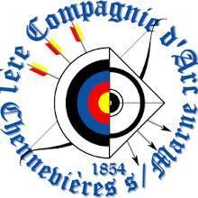
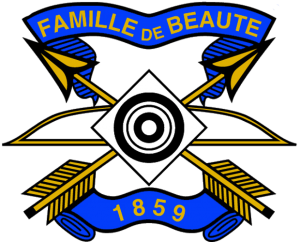
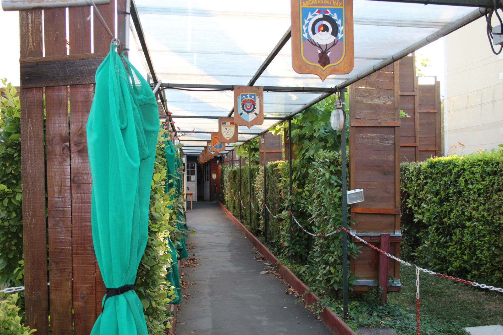
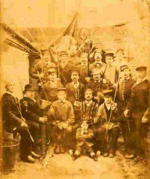
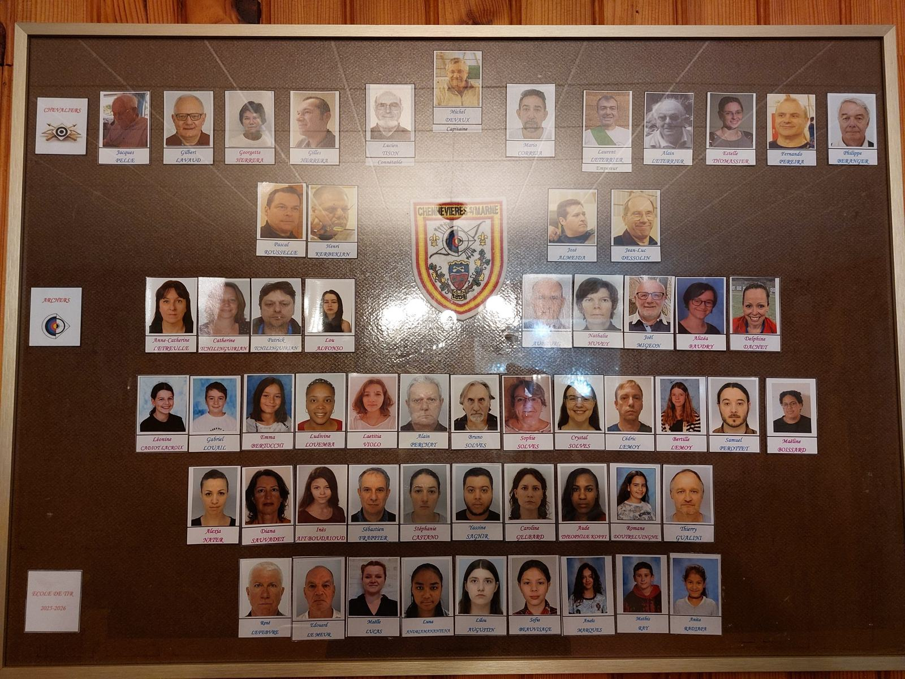

Présentation
Pourquoi « 1ère » Compagnie ?
La compagnie est née à Chennevières-sur-Marne le 18 juin 1854, sous le parrainage de la Compagnie de Champigny. Elle est affiliée à la Fédération Française de Tir à l'Arc (label bronze), fait partie de la Famille de Beauté depuis 1939 et de la Ronde des Familles d'Île-de-France.
Son nom reprend celui des compagnies d'arc, ces sociétés de chevaliers qui entretiennent depuis des siècles le tir traditionnel : un jeu d'arc (le terrain), un capitaine, un logis, des écharpes et des fêtes.
L'origine exacte du « 1ère » n'est pas détaillée sur le site officiel : texte à confirmer par la compagnie.



Frise historique
170 ans et quelques flèches
Plusieurs anciens membres sont devenus maires de la ville : Émile Janet, Jules Viejo, Pierre Boucharinc, Robert Landry.
Traditions
Roi, Connétable, Empereur : le jeu des titres
L'Abat l'Oiseau désigne chaque printemps le Roi de l'année, qui reçoit l'écharpe rouge. La Saint-Sébastien, fin janvier, honore le saint patron des archers, suivie d'un repas. Il y a aussi les parties de jardin, le Prix du Roy et du Connétable, les Prix Généraux et le Bouquet Provincial où se retrouvent des centaines de drapeaux.
Le Beursault, tiré depuis plus de cinq siècles entre deux buttes distantes de 50 m, obéit à des règles d'honneur et de courtoisie : on salue le public avant la première flèche.
Voir les événements
Abat l'Oiseau, 1905 — photo d'archive
Valeurs
L'esprit de la compagnie
Honneur & courtoisie
Le Beursault se tire selon des règles d'honneur : respect des autres, salut au public, fair-play.
Transmission
Une école de tir accueille chaque année de nouveaux archers, jeunes et adultes.
Convivialité
Repas de Saint-Sébastien, parties de jardin, barbecue, sortie de la compagnie…
Tradition vivante
Des cartes décorées, des écharpes, un logis : le passé se vit au présent.
Le bureau
Ceux qui font tourner la compagnie
Nos entraîneurs
Nos dignitaires
Source : site officiel de la compagnie. Aucun arbitre n'y est nommé.
Les membres
La compagnie en 2026
Le trombinoscope des membres est publié sur le site officiel de la compagnie. Photo reprise du site officiel (droits à l'image : voir mentions légales).
Voir la galerie
Envie d'essayer ?
Un arc, un carquois et des flèches sont prêtés pendant la première année. Il suffit de venir, ou de nous appeler au 07 89 23 46 89.